What to Know About St. George, Utah
St. George experiences mild fall weather in October, with daytime temperatures ranging from 70-80°F. This is a convenient stop before heading to Zion National Park, offering a mix of outdoor activities and local dining options.
Local customs: Residents often engage in outdoor activities, reflecting the area's active lifestyle. It's common to see locals enjoying parks and trails, so be prepared for a friendly, outdoor-oriented atmosphere.
Best times of day: Mornings and late afternoons are ideal for outdoor activities, as temperatures are cooler and the light is softer. Evenings can be pleasant for dining, but reservations are recommended at popular restaurants.
Transportation quirks: Public transportation options are limited, so renting a car is advisable for getting around. Be aware that some roads may be busy during peak hours, especially near shopping areas.
Safety: Stay hydrated, especially when engaging in outdoor activities, as temperatures can fluctuate. Be cautious of wildlife on trails and in parks.
Crowd patterns: Expect moderate crowds during the day, particularly at popular outdoor sites and dining spots. Weekends may see increased visitors, so plan accordingly.
Local etiquette: Respect local customs by following trail guidelines and keeping noise levels down in residential areas. Always dispose of waste properly to maintain the area's natural beauty.

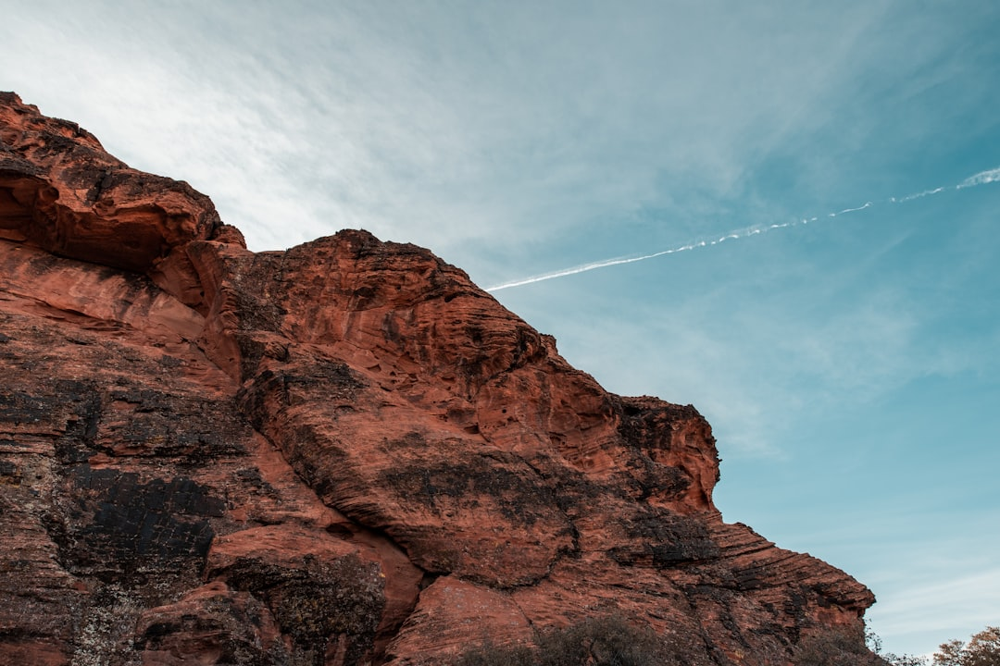

🧥 What to Expect
Typical October temperatures are around 77°F daytime and 55°F overnight. October in St. George brings vibrant fall colors to the surrounding desert landscapes. Crowds are lighter than peak season, making it a more enjoyable experience. While most trails remain accessible, check for any specific closures or conditions before heading out.
Current Weather🚗 Getting Here
Open in Google Maps →Travel south on I-15, then take exit 8 for UT-9 E toward Springdale. The drive features scenic desert vistas, especially as you approach St. George. Parking is available at most attractions in town.
🏔️ Top Attractions
⏰ Possible Daily Schedule
🎭 Cultural Events & Entertainment
St. George has a vibrant cultural scene in October with various festivals and community events. The downtown area features art walks, live music, and food trucks, creating a lively atmosphere for visitors.
Every Friday in October 2026
📍 Downtown St. George, UT
💵 Free
🍽️ Dinner Recommendations
What to Know About Zion National Park
Zion National Park in October features mild temperatures averaging 60–75°F during the day and cooler nights around 40°F. Fall foliage adds vibrant colors to the scenery, making it an excellent time for photography and hiking. Expect to encounter fewer crowds than in summer, but popular trails may still be busy.
Local customs: Respect the natural environment by staying on designated trails and packing out all trash. Many visitors appreciate a quiet atmosphere, especially in natural settings.
Best times of day: Early morning or late afternoon offers the best light for photography and cooler temperatures for hiking. Midday can be warmer and more crowded on popular trails.
Transportation quirks: The park operates a shuttle system that is mandatory for accessing Zion Canyon during peak hours. Be prepared to park outside the park and take the shuttle if you arrive late in the morning.
Safety: Stay hydrated and carry sufficient water, especially on longer hikes. Be aware of sudden weather changes and potential flash floods in slot canyons.
Crowd patterns: Expect larger crowds in the morning as visitors arrive for day hikes. Afternoons tend to see a gradual decline in foot traffic as people begin to leave.
Local etiquette: Maintain a respectful distance from wildlife and do not feed animals. Keep noise levels down to enhance the experience for all visitors.
Zion National Park's remote setting offers a unique cultural experience in October. Visitors can engage with the park's interpretive programs, including ranger-led talks and evening programs at the amphitheater. The nearby town of Springdale provides additional options, such as local art galleries and occasional live music events.
Local tip: Check out the Springdale Farmers Market, which operates on Thursdays and features local produce and crafts. It's a great way to experience the community and enjoy fresh goods. More info
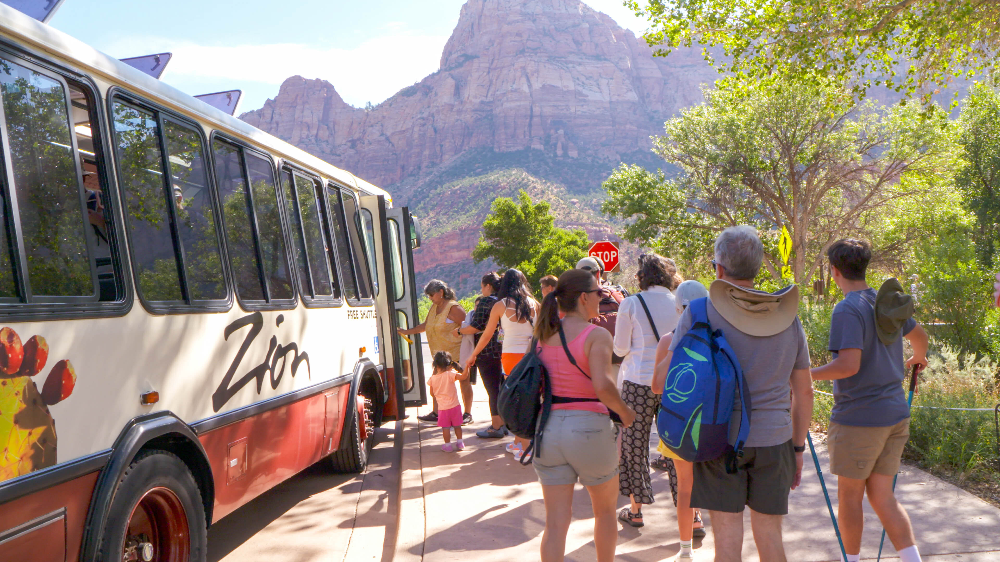
🧥 What to Expect
Typical October temperatures are around 62°F daytime and 38°F overnight. Fall colors peak in mid-October, with golden cottonwoods contrasting against red rock formations throughout the park. The park experiences fewer crowds compared to summer, making for a more tranquil experience. The park shuttle is required for access to Zion Canyon; arrive early to secure a spot.
Current Weather🚗 Getting Here
Open in Google Maps →Take I-15 N to UT-9 E for a scenic drive through the high desert. The final approach offers views of the towering cliffs that define Zion's landscape. Parking is available at the Zion Canyon Visitor Center.
🏔️ Top Attractions
⏰ Possible Daily Schedule
🎭 Cultural Events
Zion National Park's remote setting offers a unique cultural experience in October. Visitors can engage with the park's interpretive programs, including ranger-led talks and evening programs at the amphitheater. The nearby town of Springdale provides additional options, such as local art galleries and occasional live music events.
Local tip: Check out the Springdale Farmers Market, which operates on Thursdays and features local produce and crafts. It's a great way to experience the community and enjoy fresh goods. More info
🍽️ Dinner Recommendations
Bryce Canyon National Park
October 19–21, 2026
USFWS Mountain-Prairie
What to Know About Bryce Canyon National Park
Bryce Canyon National Park in mid-October features cooler temperatures, ranging from 30°F at night to 60°F during the day. Expect vibrant fall foliage among the park's unique hoodoo formations, making it a great time for photography and hiking.
Local customs: Respect the natural environment by staying on designated trails and packing out all trash. Wildlife viewing is common; maintain a safe distance from animals.
Best times of day: Early morning and late afternoon provide the best light for photography and fewer crowds. Sunrise at Bryce Point is particularly stunning.
Transportation quirks: Shuttle services may be limited in the fall; check the park's schedule before arrival. Parking is available at key trailheads but can fill up quickly.
Safety: Stay hydrated and be aware of changing weather conditions. The elevation (over 8,000 feet) can affect some visitors, so take it slow if you're not acclimated.
Crowd patterns: Expect fewer visitors than summer, but weekends can still be busy. Arriving early on weekdays can help avoid crowds at popular viewpoints.
Local etiquette: Keep noise levels down to preserve the natural experience for others. Always yield the trail to those hiking uphill.
Bryce Canyon National Park is a remote destination with limited cultural events in October. The park features ongoing interpretive programs, including ranger-led talks and evening programs at the amphitheater. Nearby towns like Tropic and Panguitch may offer occasional local celebrations or live music, but specific events during this time are not confirmed.
Local tip: Check for ranger-led programs at the Bryce Canyon Visitor Center. These programs provide insights into the park's geology and ecology, typically available daily. More info

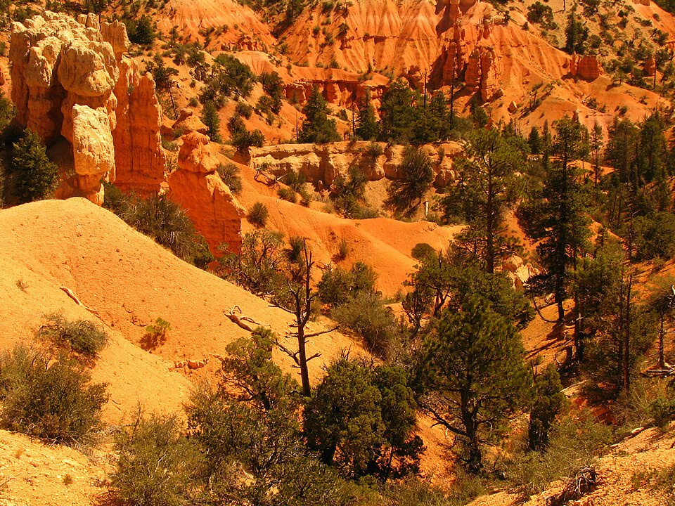
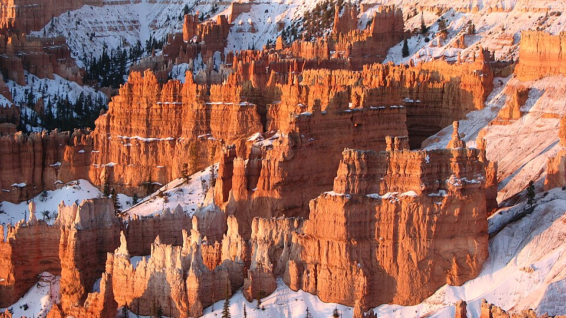
🧥 What to Expect
Typical October temperatures are around 60°F daytime and 40°F overnight. Expect moderate crowds compared to summer, with peak viewing times at sunrise and sunset. The park does not require shuttle reservations in October, but popular viewpoints may fill early.
Current Weather🚗 Getting Here
Open in Google Maps →Take US-89 N and UT-12 E for a scenic drive through canyons and high plateaus. The road offers views of red rock formations and distant mountains. Arrive at Bryce Canyon National Park's entrance where parking is available.
🏔️ Top Attractions
⏰ Possible Daily Schedule
🎭 Cultural Events
Bryce Canyon National Park is a remote destination with limited cultural events in October. The park features ongoing interpretive programs, including ranger-led talks and evening programs at the amphitheater. Nearby towns like Tropic and Panguitch may offer occasional local celebrations or live music, but specific events during this time are not confirmed.
Local tip: Check for ranger-led programs at the Bryce Canyon Visitor Center. These programs provide insights into the park's geology and ecology, typically available daily. More info
🍽️ Dinner Recommendations
What to Know About Capitol Reef National Park
Capitol Reef National Park in October features cooler temperatures averaging 50–70°F during the day and 30–40°F at night. Expect vibrant fall colors in the foliage and fewer crowds compared to summer months. Plan for a two-day stay to explore the park's unique geology and trails.
Local customs: Respect the natural environment by staying on designated trails and packing out all trash. Be mindful of local wildlife and observe from a distance.
Best times of day: Early mornings and late afternoons provide the best lighting for photography and are typically less crowded. Wildlife is also more active during these times.
Transportation quirks: The park is accessible by car, but some roads may be unpaved. Ensure your vehicle is suitable for all types of terrain.
Safety: Stay hydrated and carry sufficient water, especially on longer hikes. Be aware of sudden weather changes and prepare for cooler temperatures at night.
Crowd patterns: Expect lighter crowds on weekdays compared to weekends. Arrive early to popular trailheads to secure parking and enjoy a quieter experience.
Local etiquette: Greet fellow hikers and park staff with a friendly nod or hello. Maintain a respectful noise level to preserve the natural ambiance.
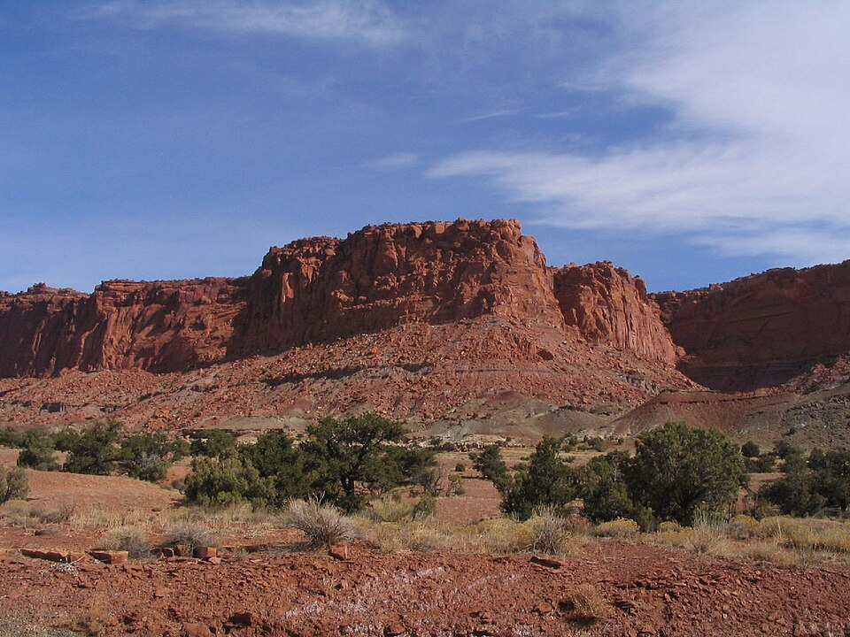
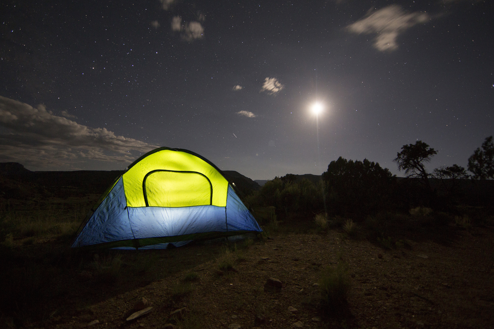
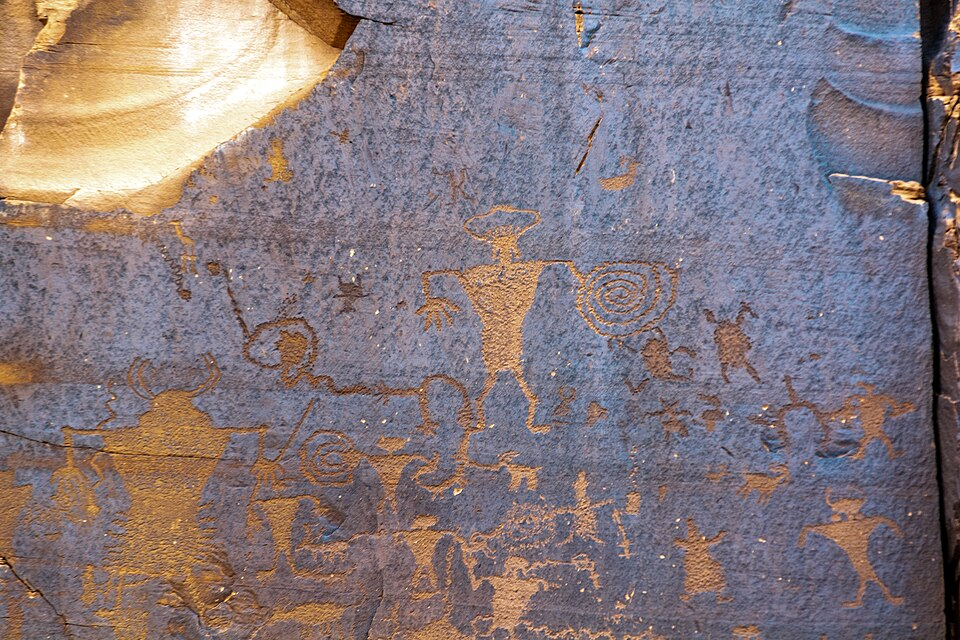
🧥 What to Expect
Typical October temperatures are around 61°F daytime and 41°F overnight. October colors highlight the red rock formations and rugged landscape of Capitol Reef. Crowds are lighter than summer, allowing for a more intimate experience in the park. Parking is available at major trailheads, but arrive early to secure a spot.
Current Weather🚗 Getting Here
Open in Google Maps →Travel from Bryce Canyon via UT-12 and US-89, enjoying scenic views of the red rock canyons along the way. The final stretch on UT-24 brings you directly into the park, with ample parking available at the visitor center.
🏔️ Top Attractions
⏰ Possible Daily Schedule
🎭 Cultural Events & Entertainment
Capitol Reef National Park features a remote setting with ongoing interpretive programs. Visitors can enjoy ranger-led talks, exhibits at the visitor center, and evening programs at the amphitheater. The nearby town of Torrey offers local dining and occasional live music.
October 21–22, 2026
📍 Capitol Reef National Park
💵 Varies
🍽️ Dinner Recommendations
What to Know About Moab
Moab in late October features mild temperatures, typically ranging from 50–70°F during the day. This is a prime time for outdoor activities, with fewer crowds than summer months, making it ideal for exploring nearby national parks and trails.
Local customs: Outdoor recreation is a significant part of Moab's culture, so expect locals to prioritize activities like hiking and biking. Respect for the natural environment is paramount; follow Leave No Trace principles.
Best times of day: Early morning is the best time for hiking, as temperatures are cooler and trails are less crowded. Sunset offers stunning views, particularly at popular viewpoints like Dead Horse Point State Park.
Transportation quirks: Parking can be limited at popular trailheads, especially during weekends. Consider arriving early to secure a spot or using local shuttles when available.
Safety: Stay hydrated and protect yourself from sun exposure, even in fall. Be prepared for sudden weather changes, as temperatures can drop significantly in the evening.
Crowd patterns: Expect increased visitors on weekends, particularly in the afternoons. Midweek visits can provide a more solitary experience on trails and at attractions.
Local etiquette: Greet locals and fellow travelers with a friendly nod or smile. When on trails, yield to those hiking uphill and maintain a respectful distance from wildlife.
Moab's cultural scene in October features a mix of outdoor activities and community gatherings. While specific ticketed events may be sparse, the area is known for its local art scene and outdoor adventures. Visitors can enjoy the beautiful fall weather while exploring the red rock landscapes and engaging with the local community.
Local tip: Check out the Moab Farmers Market on Saturday mornings for local produce and crafts. It's a great way to experience the community vibe and support local vendors. More info
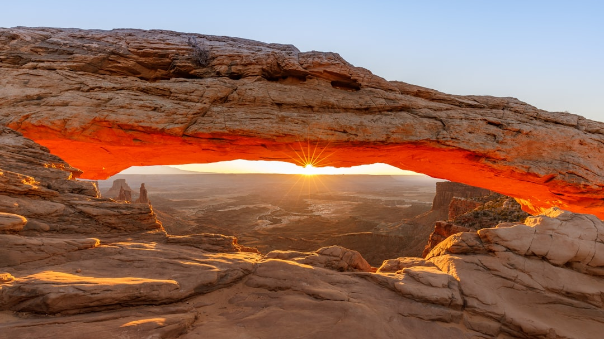

🧥 What to Expect
Typical October temperatures are around 70°F daytime and 46°F overnight. Fall foliage enhances the red rock landscape, with golden cottonwoods contrasting against the vibrant sandstone. October sees moderate crowds compared to summer, making it a good time for exploration. Trails like Delicate Arch may require caution due to potential slick spots after rain.
Current Weather🚗 Getting Here
Open in Google Maps →Take US-24 E and UT-191 S through scenic desert landscapes. The drive features stunning views of red rock formations and mesas, particularly as you approach Moab. Parking is available at various trailheads and attractions in Moab.
🏔️ Top Attractions
⏰ Possible Daily Schedule
🎭 Cultural Events
Moab's cultural scene in October features a mix of outdoor activities and community gatherings. While specific ticketed events may be sparse, the area is known for its local art scene and outdoor adventures. Visitors can enjoy the beautiful fall weather while exploring the red rock landscapes and engaging with the local community.
Local tip: Check out the Moab Farmers Market on Saturday mornings for local produce and crafts. It's a great way to experience the community vibe and support local vendors. More info
🍽️ Dinner Recommendations
What to Know About Telluride
Expect cool to mild temperatures in Telluride during late October, ranging from 30°F at night to 60°F during the day. Fall colors may still linger, providing a picturesque backdrop for outdoor activities. Plan for possible early snow and prepare for changing weather conditions.
Local customs: Residents value outdoor activities and sustainability. It's common to greet locals with a friendly 'hello' while hiking or exploring.
Best times of day: Mornings are ideal for hiking and photography, with softer light and fewer crowds. Late afternoons are perfect for enjoying local dining options.
Transportation quirks: Parking can be limited in town, especially during peak hours. Consider using the free local shuttle service to navigate the area easily.
Safety: Stay aware of changing weather conditions, especially in the mountains where temperatures can drop quickly. Always inform someone of your hiking plans and expected return time.
Crowd patterns: Expect fewer tourists in late October as the summer season winds down, but weekends may still attract visitors. Weekdays are generally quieter for exploring trails and local shops.
Local etiquette: Respect private property and adhere to trail guidelines. When in restaurants or shops, tipping 15-20% is customary.
October in Telluride features a quiet cultural scene as the summer festival season winds down. Visitors can enjoy the beautiful fall foliage and explore local galleries and shops. The Sheridan Opera House often hosts live music and performances, but specific events for late October are not confirmed yet.
Local tip: Check the Sheridan Opera House schedule for any live music events during your stay. It's a historic venue that frequently features local and touring artists. More info
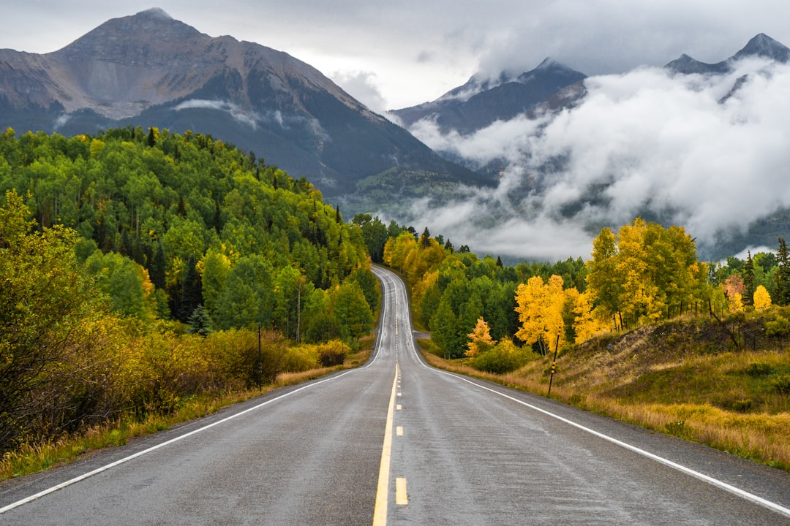
🧥 What to Expect
Typical October temperatures are around 53°F daytime and 30°F overnight. Aspen and cottonwood trees turn golden, creating a vibrant backdrop against the mountains. Crowds are significantly reduced compared to summer, providing a more relaxed experience. The gondola operates daily, but check for any seasonal updates on hours of operation.
Current Weather🚗 Getting Here
Open in Google Maps →Take US-191 S from Moab, then merge onto CO-145 N. Enjoy scenic views as you pass through the Dolores River Canyon. The final approach into Telluride features alpine scenery, with parking available in the town's designated lots.
🏔️ Top Attractions
⏰ Possible Daily Schedule
🎭 Cultural Events
October in Telluride features a quiet cultural scene as the summer festival season winds down. Visitors can enjoy the beautiful fall foliage and explore local galleries and shops. The Sheridan Opera House often hosts live music and performances, but specific events for late October are not confirmed yet.
Local tip: Check the Sheridan Opera House schedule for any live music events during your stay. It's a historic venue that frequently features local and touring artists. More info
🍽️ Dinner Recommendations
Pagosa Springs
October 26–27, 2026
Jeremiah Barnett
What to Know About Pagosa Springs
Pagosa Springs in late October features cool temperatures averaging 40–60°F. The fall foliage enhances the area's natural beauty, making outdoor activities popular. Expect a mix of relaxation at hot springs and exploration of nearby trails during your two-day stay.
Local customs: Locals appreciate outdoor activities and often engage in community events. Be respectful of private property when exploring.
Best times of day: Mornings are ideal for hiking, as temperatures are cooler and the trails are less crowded. Late afternoons are best for soaking in the hot springs as the sun sets.
Transportation quirks: Parking can be limited near popular attractions, so consider arriving early or using local shuttles. Roads may be affected by early snowfall, so check conditions before traveling.
Safety: Stay hydrated and be aware of changing weather conditions, especially in the mountains. Wildlife encounters are possible, so maintain a safe distance.
Crowd patterns: Expect larger crowds on weekends, especially at the hot springs. Midweek visits typically offer a quieter experience.
Local etiquette: When visiting hot springs, follow posted guidelines regarding swimwear and noise levels. Greet locals with a friendly nod or smile.
Pagosa Springs in October features a quiet cultural scene with opportunities for outdoor activities and local gatherings. Visitors can enjoy the natural hot springs and explore the surrounding San Juan Mountains. The town may host informal community events and gatherings, but specific ticketed events are not highlighted for this time frame.
Local tip: Check out the Pagosa Springs Center for the Arts for ongoing exhibits and local art displays. It's a good spot to experience the local art scene and find information on any impromptu events. More info

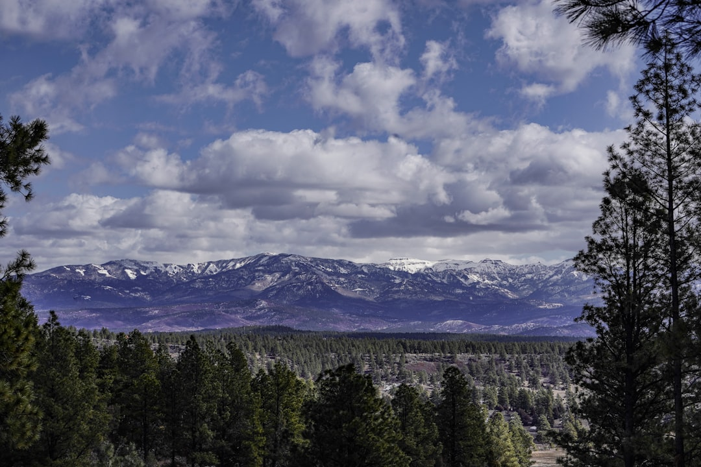
🧥 What to Expect
Typical October temperatures are around 61°F daytime and 33°F overnight. Autumn foliage highlights the landscape with vibrant oranges and yellows against the backdrop of mountains. Crowds will be lighter than in summer, making outdoor activities more enjoyable. Most attractions are open, but check for any seasonal hours.
Current Weather🚗 Getting Here
Open in Google Maps →Take CO-145 E to US-160 E for a scenic drive through the San Juan Mountains. The route features stunning mountain views and winding roads before arriving in Pagosa Springs. Parking is available at most attractions in town.
🏔️ Top Attractions
⏰ Possible Daily Schedule
🎭 Cultural Events
Pagosa Springs in October features a quiet cultural scene with opportunities for outdoor activities and local gatherings. Visitors can enjoy the natural hot springs and explore the surrounding San Juan Mountains. The town may host informal community events and gatherings, but specific ticketed events are not highlighted for this time frame.
Local tip: Check out the Pagosa Springs Center for the Arts for ongoing exhibits and local art displays. It's a good spot to experience the local art scene and find information on any impromptu events. More info
🍽️ Dinner Recommendations
What to Know About Santa Fe
Santa Fe in late October features mild temperatures, typically ranging from 40–70°F. Expect vibrant fall foliage and numerous cultural events, making it an ideal time for exploration.
Local customs: Santa Fe has a rich Native American and Hispanic heritage. Visitors should respect local customs, especially when visiting sacred sites.
Best times of day: Mornings are ideal for outdoor activities, while afternoons are perfect for gallery hopping. Evenings often feature local events or performances.
Transportation quirks: Parking can be limited in the downtown area, so consider using public transport or rideshares. Many attractions are within walking distance of each other.
Safety: Stay aware of your surroundings, especially in crowded areas. Keep personal belongings secure, particularly in busy markets.
Crowd patterns: Expect moderate crowds during the day, especially on weekends. Early mornings and late afternoons are typically quieter.
Local etiquette: When dining, it's customary to greet staff with a friendly 'hello' or 'gracias.' Tipping 15-20% is standard in restaurants.
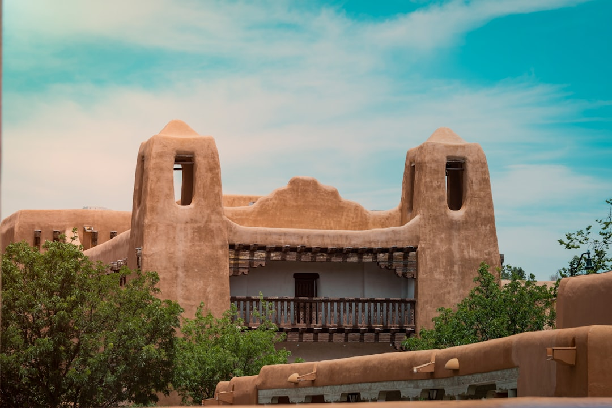


🧥 What to Expect
Typical October temperatures are around 63°F daytime and 43°F overnight. Autumn colors enhance Santa Fe's adobe architecture, with warm earth tones contrasting against clear blue skies. Crowds are moderate compared to the summer peak season, allowing for a more relaxed experience. Some attractions may require timed-entry tickets, so plan ahead.
Current Weather🚗 Getting Here
Open in Google Maps →Take US-160 E from Pagosa Springs, then switch to US-285 N for a scenic drive through rolling hills and vast open landscapes. This route offers picturesque views of the Sangre de Cristo Mountains as you approach Santa Fe.
🏔️ Top Attractions
⏰ Possible Daily Schedule
🎭 Cultural Events & Entertainment
Santa Fe's cultural scene in late October features a blend of art walks, local markets, and seasonal celebrations. The city is known for its vibrant arts community and numerous galleries showcasing regional artists.
🍽️ Dinner Recommendations
🎒 Packing Summary (Trip-Wide)
Here's what to bring and where it's needed:
- camera (Bryce Canyon National Park, Pagosa Springs, Santa Fe, Telluride)
- comfortable walking shoes (Santa Fe)
- daypack (Zion National Park)
- hiking boots (Capitol Reef National Park, St. George, Utah, Telluride, Zion National Park)
- hiking shoes (Moab, Pagosa Springs)
- layered clothing (Moab, Telluride)
- layers for variable temperatures (Bryce Canyon National Park)
- layers for warmth (Zion National Park)
- light jacket (Capitol Reef National Park, Pagosa Springs, Santa Fe, St. George, Utah)
- snacks (Capitol Reef National Park, Moab)
- sturdy hiking shoes (Bryce Canyon National Park)
- sunscreen (St. George, Utah)
- water bottle (Bryce Canyon National Park, Capitol Reef National Park, Moab, Pagosa Springs, Santa Fe, St. George, Utah, Telluride)
- water shoes (Zion National Park)